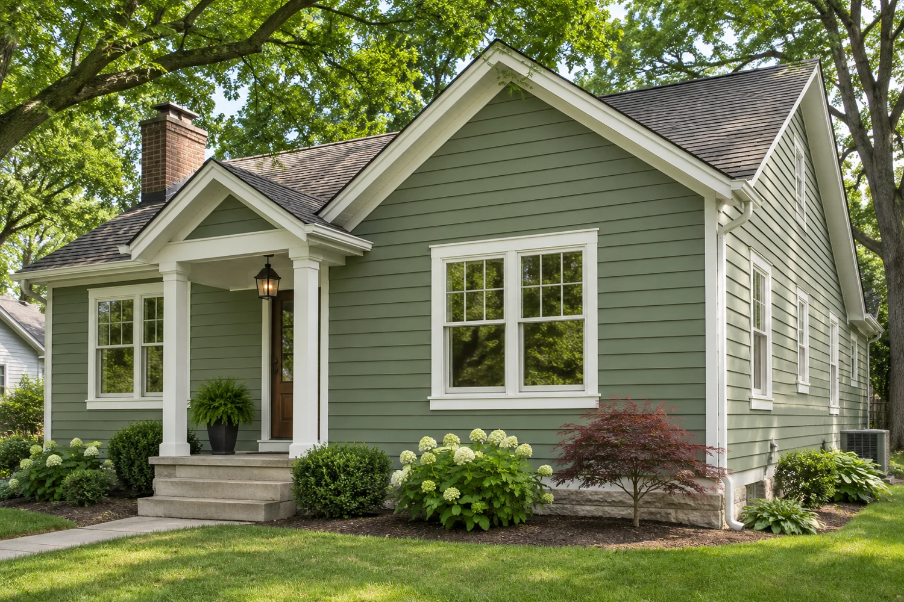
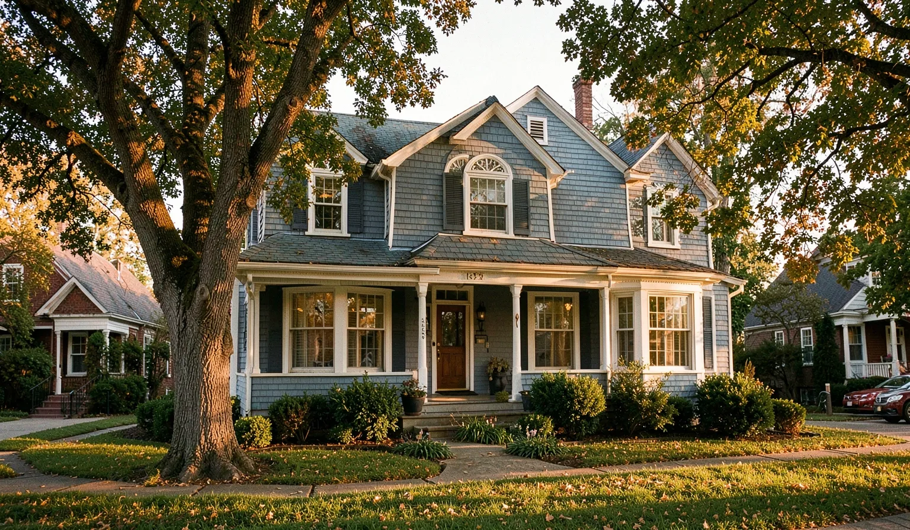
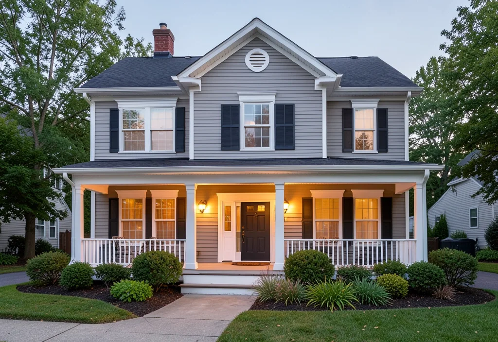
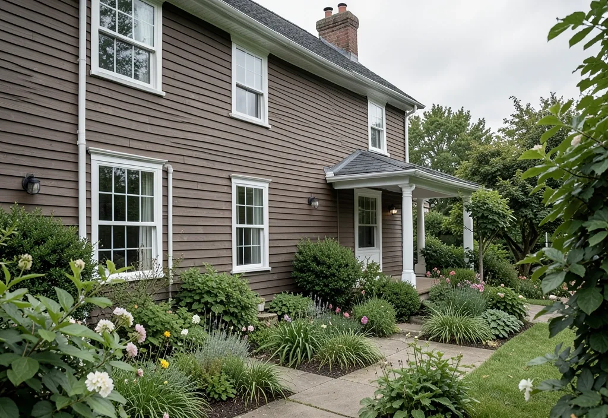
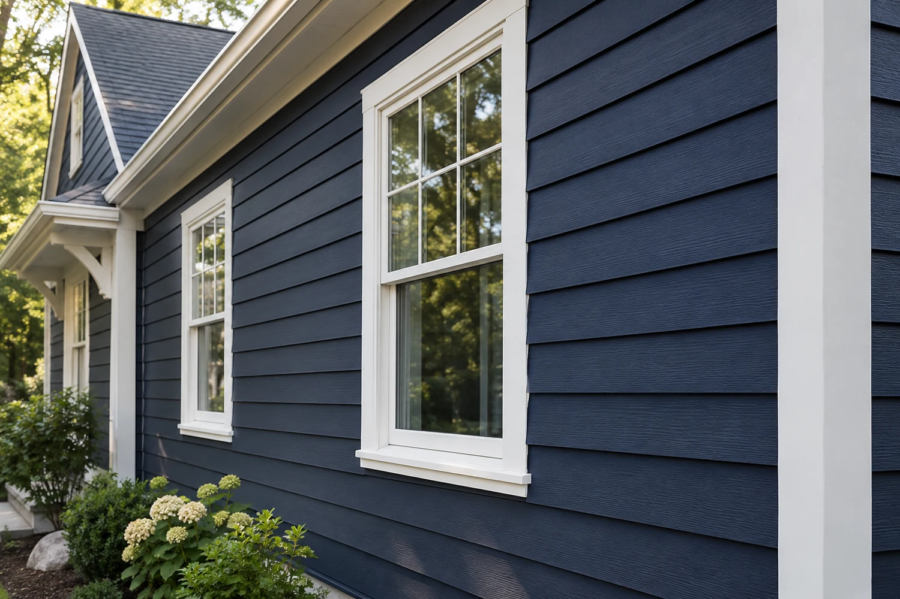
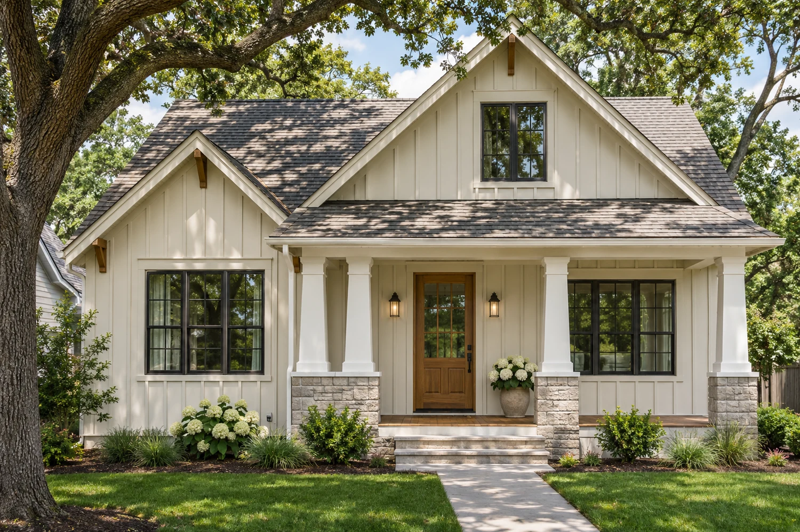
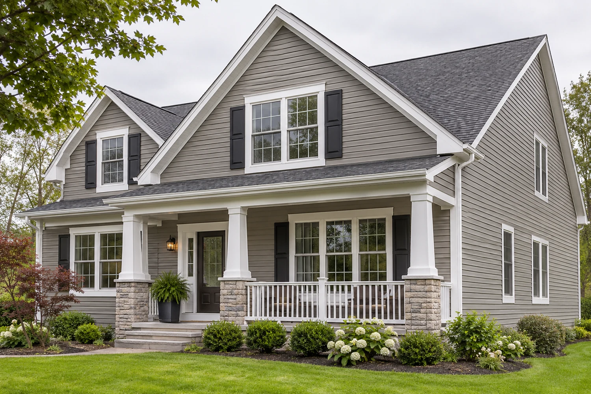
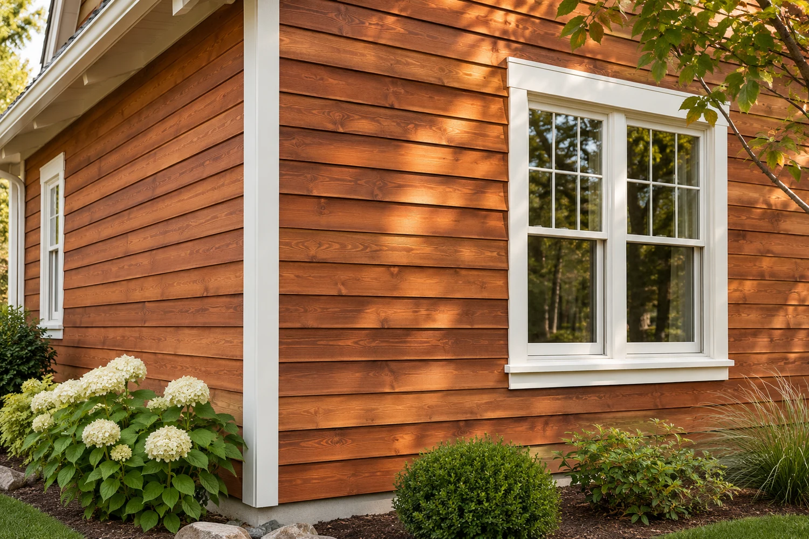

Exterior refresh


Explore siding options for your home. Call (314) 555-5555 to discuss your project and ask about connecting with a local service provider.
Call (314) 555-5555Missouri Siding is a free referral resource that helps homeowners connect with independent local service providers. We do not install siding or perform construction work. Ask the provider to confirm your ZIP code, available services, pricing, and scheduling.

Every home is different. Discuss vinyl, fiber cement, engineered wood, or other siding options with a provider. Ask how materials, maintenance needs, colors, and trim choices fit your home and budget.
Before hiring, verify the provider’s license and insurance, review a written estimate, and confirm the scope and schedule. Availability and services vary by provider.
Call (314) 555-5555Illustrative siding ideas, not a portfolio of completed provider projects.




Tell the provider your ZIP code, the siding you currently have, and what you would like to change. Photos of your home can help explain your goals. Confirm all project details directly before agreeing to work.

Call about residential siding for your St. Louis-area home. Confirm coverage, options, and estimates with the answering provider.
Call (314) 555-5555